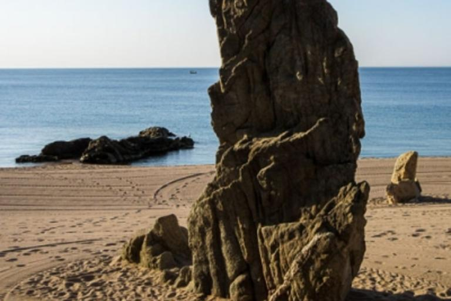

Visita · Platja d'Aro
És un monòlit de roca granítica moldejat per l'erosió dels elements naturals durant els segles que presideix la platja Gran de Platja d'Aro i s'ha convertit en un veritable símbol del municipi .